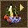

通常，创建一个地图的第一阶段是创建一个地形。这一步骤要决定在什麽地方要有山脉、高原或山丘，哪裡有广阔的海洋或河流，还有那些蜿蜒的道路。（这一步比较容易，你可以在萤幕画纸上描绘你的地图的概况）。当你完成这一步后，点击左工具栏上的这个按钮，将打开一个新的视窗，你可以使用它给你的地图加入新的景观元素。
左键点击增加地形到地图，右键点击则删除地形。
点击这个按钮增加山到地图上，这些山在地图上标记为白色。点击这个按钮添加水到地图上，水被标记为蓝色。
这个按钮能帮你添加平坦地带到地图上，大多是添加到山脉（即白色部分）的边缘，之后就能创造一条倾斜的道路，这样，你的士兵就能到达地图上的高原地带。平坦地带被标记为红色。
使用上捲动条可以改变这些地形的大小。
你可以使用这个按钮添加森林，即标记为绿色的地方。下滚动条可以调节森林的密度。
点击这个按钮可以改变山的高度。将你的鼠标指向白色的山，然后点击按住鼠标右键，白色地区将慢慢变暗，颜色越暗，高度就越低。调节下滚动条可以改变范围大小。
这个按钮可以让你撤销你的编辑。
点击“保存计位图”可以保存这张地图的画纸，可以创建一张图片。点击“加载计位图”，可以加载一张之前保存的计位图。点击“生成”则可以在你的编辑器裡按照画板上的设定生成一张地图。
注意：生成地图时将删除原地图上的所有地形地貌、单位建筑。如果你不想生成一张地图，请点击“取消”按钮。